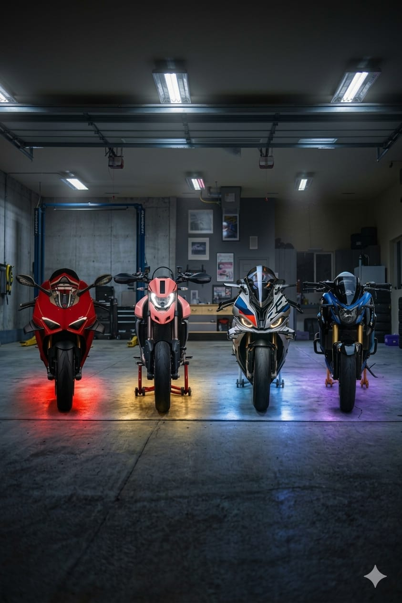
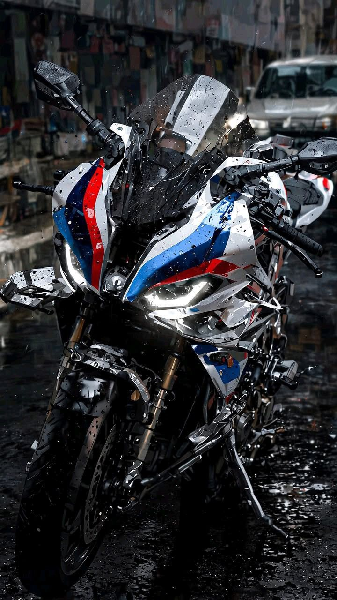
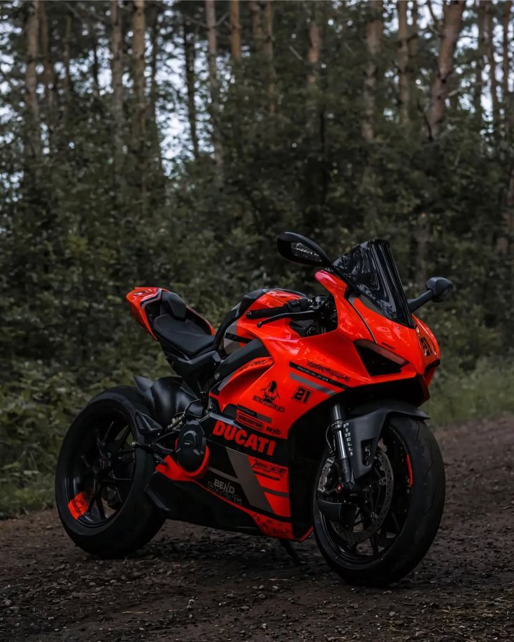
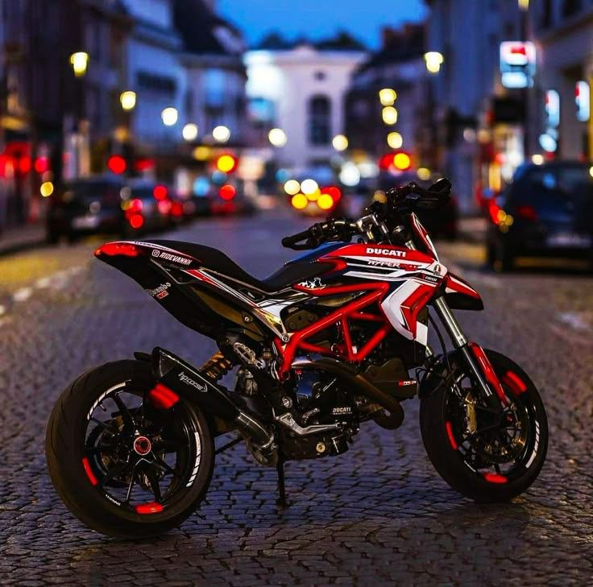
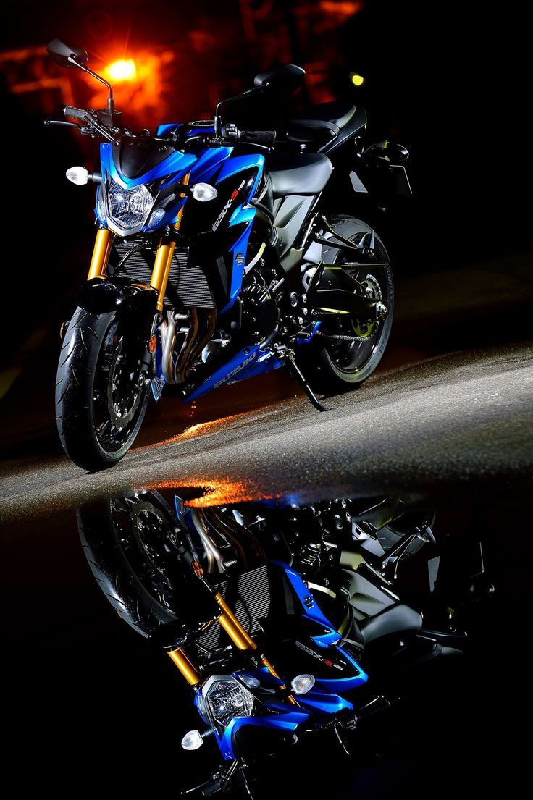

Estas son algunas de las motos que más me han llamado la atención a lo largo de mi vida y que representan una fuente de inspiración para seguir adelante. Cada una tiene una tecnología que la hace única y especial para mí.
"La velocidad, la libertad y la ingeniería se unen en estas motos que sueño tener algún día."


La BMW S1000RR es una de las motos deportivas más impresionantes del mundo. Se caracteriza por su tecnología avanzada, su gran potencia y su diseño agresivo. Es una moto que representa velocidad, innovación y precisión en la ingeniería.

La Ducati Panigale V4 es una de las motos italianas más reconocidas del mundo. Su diseño es elegante y agresivo al mismo tiempo, además de tener tecnología inspirada en las motos de competición de MotoGP. Es una moto que representa velocidad, estilo y alto rendimiento.

La Ducati Hypermotard es una moto diferente a las superbikes tradicionales. Está diseñada para ofrecer una conducción divertida, ágil y agresiva. Su estilo mezcla el mundo de las motos deportivas con el de las motos supermotard, lo que la hace muy llamativa y única.

La Suzuki GSX-S750 es una moto naked deportiva conocida por su equilibrio entre potencia, agilidad y diseño agresivo. Está basada en la plataforma de la GSX-R, pero adaptada para una conducción más cómoda en carretera.
Estas motos no solo representan velocidad o diseño, sino también sueños y metas personales. Mi objetivo es estudiar ingeniería de sistemas, trabajar en el área de la tecnología y algún día poder cumplir estos sueños gracias al esfuerzo y al conocimiento.